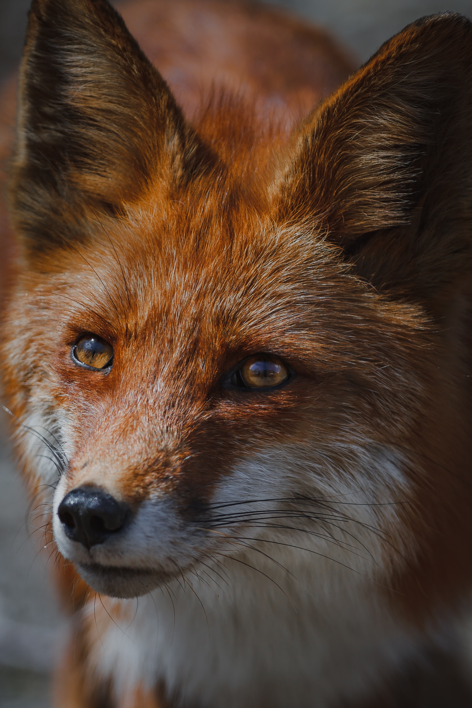

Glad you got here!
I'm amazed with all sorts of software development related topics.
I started my journey, pushing the borders of common smart home devices with Python scripts,
learned Go as a DevOps Engineer at MOIA and on the side I'm playing around with some HTML/CSS as you can see here.
As a DevOps Engineer I have expertise with AWS cloud services, CI/CD, Docker and many other technologies.
If I'm not glued to my computer screen, I try to ride my bike as much as possible, take photos or cook.
Find me on social!